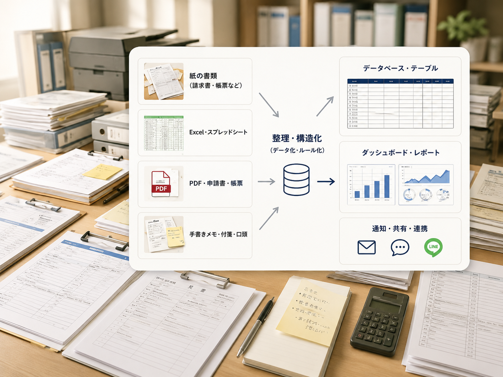

必要な資料がすぐに見つからない
紙やExcelがバラバラに保管され、探すのに時間がかかってしまう。
Excel・PDF・紙資料・メールに散らばった情報を整理し、
AI検索・問い合わせ対応・資料作成支援につなげます
AI導入前の土台づくりから、業務接続まで支援します

紙やExcelがバラバラに保管され、探すのに時間がかかってしまう。
担当者しかわからない業務や複雑なファイルで引き継ぎが不安。
二重入力や集計作業に時間がかかり、ミスや残業の原因になっている。
AI導入や自動化に興味はあるが、まず整える業務が見えていない。
業務と資料の流れを確認し、まず改善する対象を1業務に絞ります。
Excel・PDF・紙資料・メールを整理し、業務MVP・初期運用版として試せる形へ整えます。
AI検索・分類・回答支援や小さな自動化を現場で試し、フィードバックに合わせて調整します。
改善が落ち着いたら、見守り・標準保守・継続改善から必要な形に切り替えます。
つくばAIパートナーズは、茨城県つくば市を拠点に、社内データ整備からAI活用接続までを支援しています。現場の手順を一緒に棚卸しし、正しい置き場所、更新ルール、AI検索・分類・回答支援への接続まで段階的に整えます。初期運用版を現場で試し、フィードバックをもとに改善する現場伴走型・業務定着型アジャイル開発を大切にしています。
| 屋号 | つくばAIパートナーズ |
|---|---|
| 設立 | 2026年4月 |
| 事業内容 | 業務データ整備、AI活用接続、業務自動化 |
| 代表者 | 代表 廣瀬 龍之輔 |
| 代表プロフィール | 業務整理からデータ整備、AI接続、自動化まで、現場で使い続けられる仕組みづくりを支援しています。 |
| 対応エリア | 茨城県を中心にオンライン対応可 |
つくばAIパートナーズの考え方や、業務データ整備・AI活用に関する発信をお届けします。
ナレッジマネジメントで「何を形式知化し、何を現場に残すか」を考察した記事です。
noteで読む生成AIの提案が似た型に寄りやすい理由を、事業づくりと現場実装の視点で整理しました。
noteで読む代表が、AI事業を始めた背景と、FDEとして業務データ整備に向き合う理由をまとめました。
noteで読む